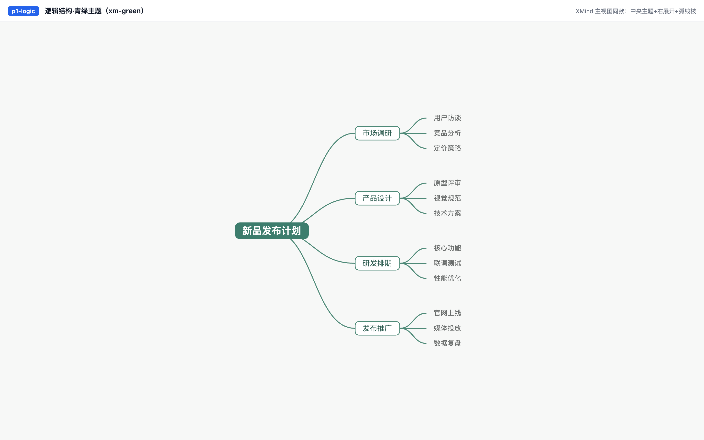
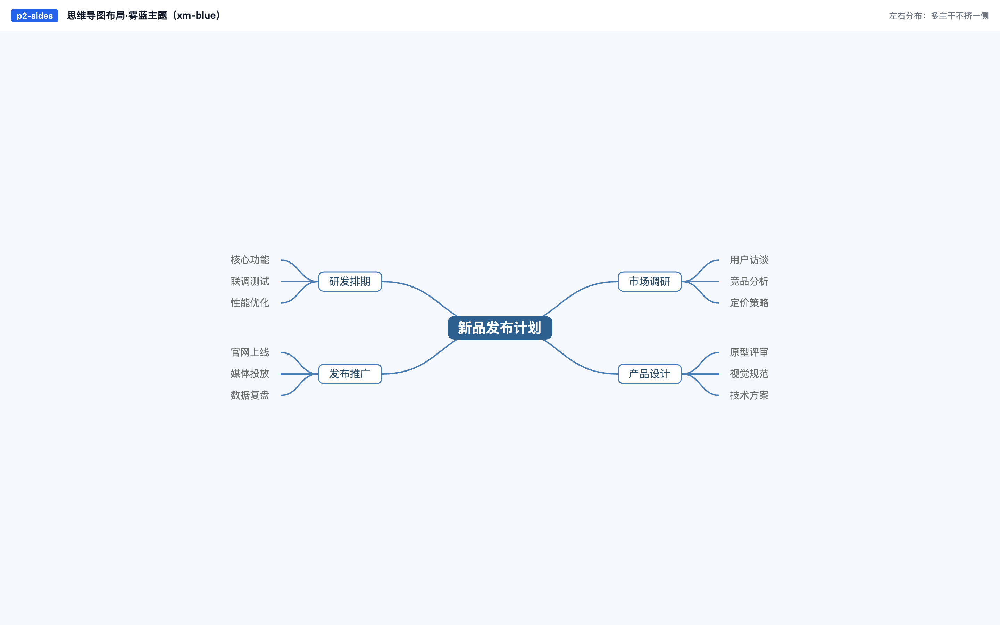
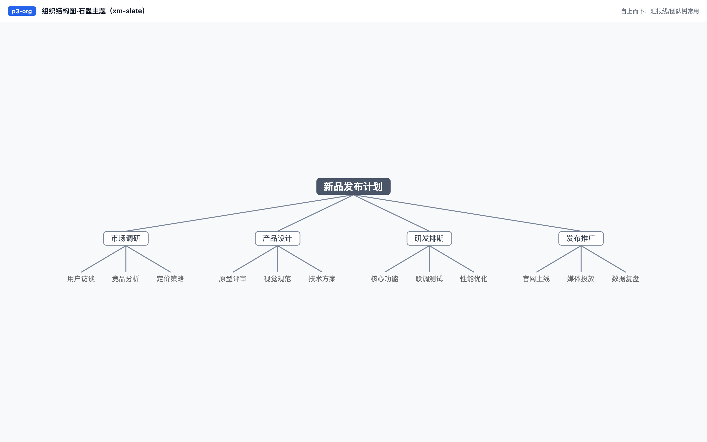
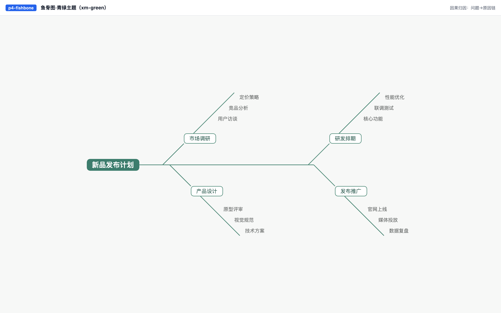
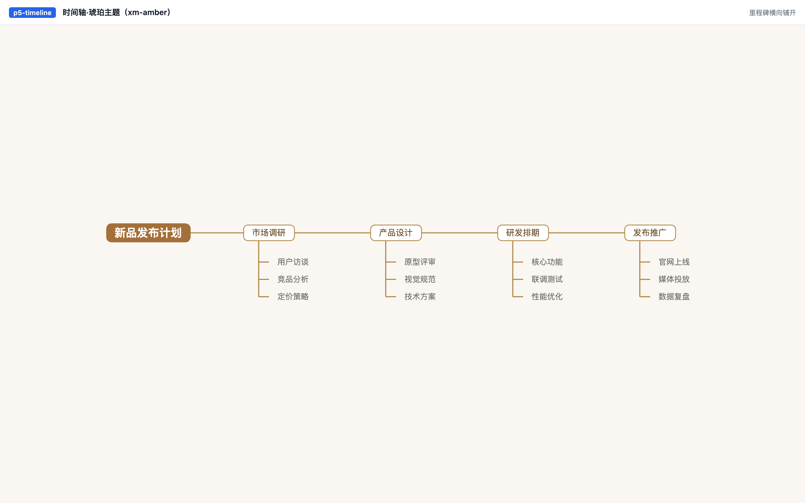
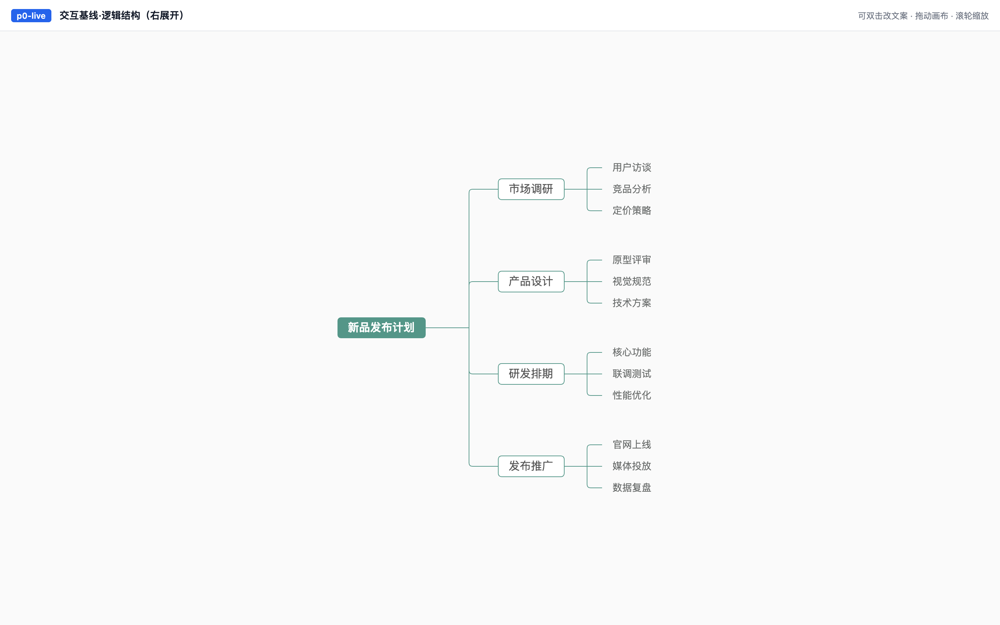

真引擎渲染（simple-mind-map@0.14.0-fix.3 · MIT），同一棵示例树 × 六个视图。定案与契约见 ../plan.md；点卡片进 *.html 可交互（双击改文案 / 拖画布 / 滚轮缩放，CDN 需联网）。

XMind 主视图同款：中央主题 + 右展开 + 有机曲线枝 + 无框叶子。打开原型

左右分布：多主干不挤一侧，重脑暴场景常用。打开原型

自上而下：汇报线 / 团队树 / 分解结构常用。打开原型

因果归因：问题 → 原因链（同一棵树换布局即得）。打开原型

里程碑横向铺开：计划 / 排期 / 路线图常用。打开原型

引擎装好即得：双击改文案、拖画布、滚轮缩放。打开原型